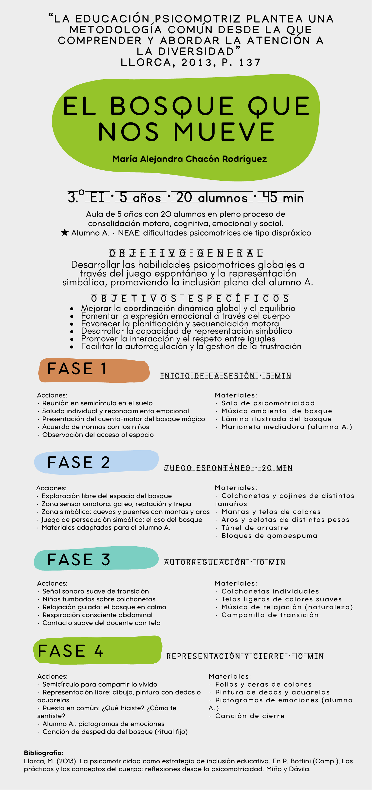

El bosque
que nos mueve.
Una propuesta de psicomotricidad inclusiva para un aula de 5 años, organizada en cuatro fases a lo largo de 45 minutos.
Autora: María Alejandra Chacón Rodríguez.
Aprender con el cuerpo y el juego
La sesión combina juego espontáneo y representación simbólica para trabajar las habilidades psicomotrices, la expresión emocional y la participación de todo el alumnado.
- Inicio de la sesión · 5 minutos. Encuentro y presentación del bosque mágico.
- Juego espontáneo · 20 minutos. Exploración del espacio y juego simbólico.
- Autorregulación · 10 minutos. Calma, respiración y relajación.
- Representación y cierre · 10 minutos. Expresar y compartir lo vivido.
